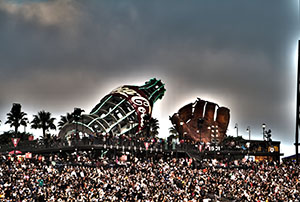

Sports in San Francisco
San Francisco Giants
 The Giants had another great year, and pulled off another World Series win.
Buster Posey did great hitting 24 home runs this season. Matt Cain also pitched the perfect game during this past season, it was one of the most exciting games to watch.
I always try and time my visits so that the Giants will be playing a home game while I am there so I can watch the Giants play in ATT park. The park is my favorite of all parks with the great views, great food, and great team. I also love watching the Giants play against L.A. and do my best to be there when a game is going on against those two teams. For when I am unable to visit San Francisco I will watch them when they come to Denver to play the Rockies.